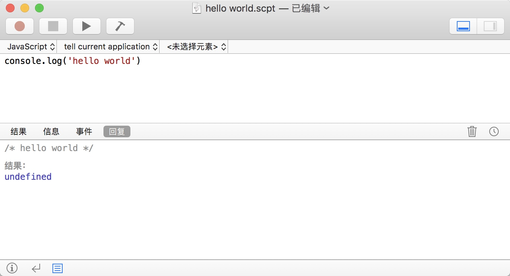
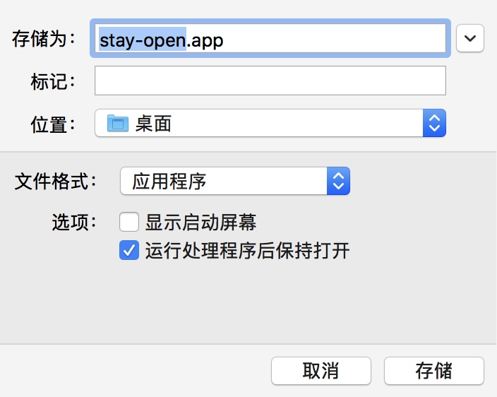

JavaScript for Automation(JXA) 入门
从 macOS 10.10 开始(当时还叫 OS X)，苹果提供了一种新的使用 JavaScript 语言编写自动化脚本的方式，和已有的 AppleScript 一样，能够方便我们操作其他应用，自动化地处理一些事务。然而使用 JavaScript 编写代码要比 AppleScript 容易得多。
0. 学习一个新工具的时候，我们到底在学什么？
在了解 JXA 之前，先考虑一个问题：当决定要学习使用 JXA 的时候，我们到底需要学习什么？不仅是本文档介绍的 JXA，学习任何一个新工具，都逃不过这个问题：
- 了解基本概念
- 安装开发工具
- 配置开发环境
- 学习编程语言
- 了解基本框架、工具的使用
1. JXA 基本概念
在日常工作中，我们通常需要处理很多复杂、重复且耗时的任务。通过编写脚本，我们可以自动化地处理一些与应用、进程和操作系统交互的事务，从而提高效率，减少错误，节约时间。
脚本是如何工作的
开放脚本架构(Open Scripting Architecture, OSA)为 OS X 提供了夸应用通信的标准和扩展机制，这种通信发生于应用(Applecations)之间交换苹果事件(Apple Events)。Apple Events 即一种封装了命令和数据的进程间通信(interprocess message)。
一个*脚本化应用(scriptable application)通过执行操作或提供数据来响应 Apple events。每个脚本化应用都实现了自己的脚本功能，并通过脚本字典(scripting dictionary)*公开自己独特的术语。
在 OS X 中，OSA 提供以下能力：
- 开发者可以创建脚本化应用并公开脚本术语
- 用户可以通过脚本语言编写脚本
- 使用 Apple events 可以在同一台计算机的不同应用或不同计算机之间进行通信
*开放脚本框架(Open Scripting framework)中定义了用于创建脚本组件(scripting components)*的标准数据结构、程序和资源。该框架同时提供API，用于编译、执行、加载和存储脚本。
*苹果事件管理器(Apple Event Manager)*为创建脚本化应用提供基础支持，由 CoreServices 框架内的 AE 框架实现。开发者可以通过 Foundation 框架中的 Apple Event API 与 Apple Event Manager 进行交互。
下图展示了上述组件如何在操作系统中协同工作1：

脚本的类型有哪些
- Applets: 已保存为app的脚本，行为与其他app类似，双击可以启动并运行。运行一个 Applet 时，脚本
run函数中的代码会执行。如果脚本没有run函数，则视脚本的顶级域为隐式的run函数。 - Droplets: 可向图标拖放文件和文件夹的脚本。双击可以启动并运行脚本的
run函数，或将文件、文件夹拖放到图标上进行处理。在一个 Droplet 脚本中，拖放进来的文件或文件夹将会传入openDocuments函数处理。 - Scripts: 脚本文档。双击可以打开并编辑。一些应用和进程可以加载并运行 Script。例如，邮件规则可以执行脚本来处理符合特定条件的邮件。脚本有时被称为编译脚本(compiled scripts)。
- Script bundles: 以 bundle 形式保存的脚本文档。Bundle 是一个具有标准化分层结构的目录，它包含可执行代码和该代码使用的资源。
- Stay-open scripts: 默认情况下，applets 和 droplets 在启动后运行并退出。但是，当配置为保持打开状态时，它们将保持打开状态，直到明确命令退出为止。通常，保持打开的脚本包含
idle函数，它启动定期操作。
在 Mac 上，编写自动化脚本主要使用 AppleScript 和 JavaScript。本文档将从零开始介绍如何使用 JavaScript 编写自动化脚本。
2. 安装工具
从 macOS 10.10 开始，苹果为 OSA 加入了 JavaScript 的支持，在已有能够运行 AppleScript 脚本的地方，都可以运行 JavaScript 编写的脚本。因此我们不需要安装额外的任何软件，使用Script Editor应用或命令行使用osascript命令即可运行 JavaScript 脚本。
3. 开发环境
Script Editor
打开脚本编辑器应用/Applications/Utilities/Script Editor.app。
Hello world
新建一个脚本，输入
console.log('hello world')
点击运行:

寻求帮助
如果我们需要查找某个应用的脚本字典，在状态栏点击文件->打开词典...，在弹出的对话框中选择应用。

REPL
执行命令osascript -il JavaScript。其中-i表示交互模式，-l JavaScript表示使用 JavaScript ，不加该标签则默认使用 AppleScript。
➜ ~ osascript -il JavaScript
>> console.log('hello world.')
hello world.
=> undefined
>>
Shell Script
执行命令osascript -l JavaScript -e '$.NSLog("hello ObjC")':
➜ ~ osascript -l JavaScript -e '$.NSLog("hello ObjC")'
2018-09-18 16:43:31.327 osascript[35632:34312370] hello ObjC
Shebang Script
创建文件并保存到./test.js：
#!/usr/bin/env osascript -l JavaScript
function run(argv) {
console.log(JSON.stringify(argv))
}
执行命令./test.js -a -b -c -d lll：
➜ ~ ./test.js -a -b -c -d lll
["-a","-b","-c","-d","lll"]
或osascript -l JavaScript ./test.js -a aaa -b bbb：
➜ ~ osascript -l JavaScript ./test.js -a aaa -b bbb
["-a","aaa","-b","bbb"]
4. 编程语言
JavaScript 本身无需多言。值得关注的是，OSA 对 JavaScript 功能的支持取决于 macOS 的版本。JXA 使用的 JavaScriptCore 引擎版本似乎与 macOS 捆绑的 Safari 版本相对应2。参阅 kangax's compatibility table 并找到 SF 列查看不同 Safari 版本的支持情况。
5. 框架，全局对象，第三方库以及其他……
脚本中的事件处理函数(Event Handlers)
脚本中实现特定的名字的函数，可以接收特定的事件：
-
run：脚本运行时调用该函数。默认情况下，脚本顶级域中的所有代码都被视为包含在隐式的run函数中。function run() { var app = Application.currentApplication() app.includeStandardAdditions = true app.displayDialog("The script is running.") } -
quit：当脚本退出时调用。这个函数是可选的，如有必要，可以在该函数中执行数据清理操作。var app = Application.currentApplication() app.includeStandardAdditions = true function quit() { app.displayDialog("The script is quitting.") } -
openDocuments：实现该函数的脚本将自动处理拖放操作。当以这种方式启动时，openDocuments函数会传入一个参数，存有被拖放文件或文件夹的列表。function openDocuments(droppedItems) { // Process the dropped items here } -
idle：保存脚本时，文件格式选择应用程序，同时勾选运行处理程序后保持打开。在保持打开的脚本 app 中，脚本在run函数完成后保持打开状态，并且每30秒调用一次idle函数。可以使用该函数执行周期任务，例如监视文件夹以查找要处理的新文件。要更改idle函数的调用间隔，需要函数返回一个新的间隔，单位为秒。
var app = Application.currentApplication() app.includeStandardAdditions = true function idle() { app.displayDialog("The script is idling.") return 5 }
全局 JS 对象
作为 JavaScript 的执行环境，JXA 包含了以下全局变量3：
AutomationApplicationLibraryPathProgressObjectSpecifierdelayconsole.logObjCRef$
JXA 与 ObjC
这是最激动人心的部分。
加载 OC 框架到 JS 上下文
JXA通过内置的 Objective-C Bridge 调用 ObjC 接口。上一节提到的ObjC和$是用来调用 Objective-C Bridge 全局对象。
其中ObjC对象提供接口用于 JS 引擎访问/操作 OC 对象，而$则是 OC 对象在 JS 上下文中的映射。看不懂这句话也没关系，举个例子，使用ObjC.import()函数加载外部框架：
ObjC.import('Cocoa')
$.NSBeep()
如果直接执行$.NSBeep()，会收到错误：
>> $.NSBeep()
!! Error on line 1: TypeError: $.NSBeep is not a function. (In '$.NSBeep()', '$.NSBeep' is undefined)
这是因为NSBeep()是 Cocoa 框架的一部分，我们在使用该函数前需要调用ObjC.import('Cocoa')将函数加载到 JS 上下文中。
调用 OC 方法的 JS 语法
举个例子，下面的 OC 代码：
NSRect frame = NSMakeRect(0, 0, 200, 200);
NSWindow* window = [[NSWindow alloc] initWithContentRect:frame
styleMask:NSBorderlessWindowMask
backing:NSBackingStoreBuffered
defer:NO]
在 JXA 中这样实现：
var styleMask = $.NSTitledWindowMask | $.NSClosableWindowMask | $.NSMiniaturizableWindowMask;
var frame = $.NSMakeRect(0, 0, windowWidth, windowHeight);
var window = $.NSWindow.alloc.initWithContentRectStyleMaskBackingDefer(
frame,
styleMask,
$.NSBackingStoreBuffered,
false
);
引用调用传参
NSFileManager类的方法- (BOOL)fileExistsAtPath:(NSString *)path isDirectory:(BOOL *)isDirectory;，第二个参数的类型为BOOL *，在 OC 中我们通常使用引用调用来传递这个参数：
BOOL isDir;
NSFileManager *fileManager = [[NSFileManager alloc] init];
[fileManager fileExistsAtPath:fontPath isDirectory:&isDir];
在 JXA 中可以使用Ref()函数获取一个变量，该变量可以传给需要引用调用的参数。调用完成后，变量数据通过isDirRef[0]返回：
var isDirRef = Ref() //set up a variable which can be passed by reference to ObjC functions.
$.NSFileManager.alloc.init.fileExistsAtPathIsDirectory("/Users/Sancarn/Desktop/D.png", isDir)
var isDir = isDirRef[0] //get the data from the variable
参考资料
- Mac Automation Scripting Guide
- JavaScript for Automation Cookbook
- JavaScript for Automation Release Notes
- AppleScript Language Guide